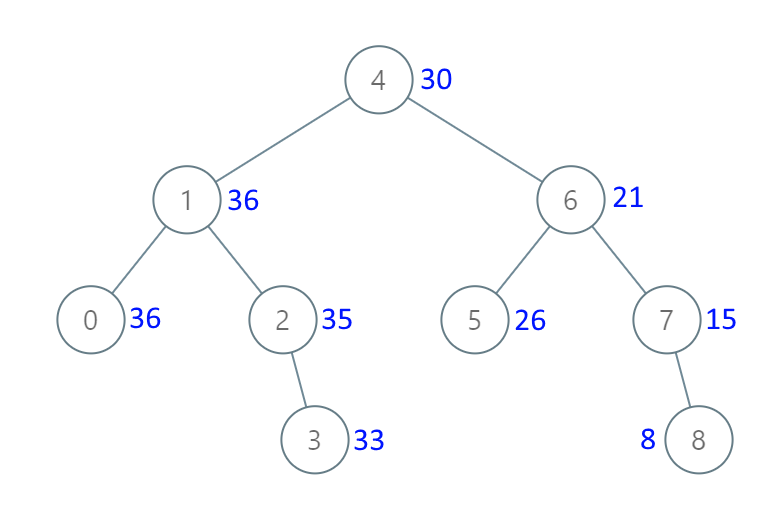

538. 把二叉搜索树转换为累加树
逆中序（右→根→左）遍历，边走边累计已访问之和；当前结点新值 = 原值 + 这个累计和。
思路
- BST 中序是升序；反过来走（右→根→左）就是从大到小，走到的每个结点前面恰好是「比它大的所有值」。
- 用
carry累计已访问的原值和：当前结点新值 = 原值 +carry+ 右子树原值和。 - 递归返回子树原值总和，天然把「右子树和」带给父亲；左子树的 carry = 当前结点的新值（新值已含它自己）。
- 用返回值传状态而不是成员变量，多次调用不残留。
图解
最优解
1class Solution {2 public TreeNode convertBST(TreeNode root) {3 sumGreater(root, 0);4 return root;5 }6 7 // 逆中序（右→根→左）走一遍：carry 是「比这棵子树所有值都大」的已累计和；8 // 返回值是这棵子树改之前的原值总和9 private int sumGreater(TreeNode node, int carry) {10 if (node == null) return 0;11 int right = sumGreater(node.right, carry); // 先转右子树，拿到它的原值和12 int old = node.val;13 node.val = old + carry + right; // 比它大的 = 右子树全部 + 祖先传来的14 int left = sumGreater(node.left, node.val); // 左子树的 carry = 当前结点的新值15 return right + old + left;16 }17}题目
给出二叉 搜索 树的根节点 root，该树的节点值各不相同，请你将其转换为累加树（Greater Sum Tree），将其转换为一个更大的树，使得原始二叉搜索树中的每个节点值都变为原本值加上原本二叉搜索树中所有比该节点值大的节点值的总和。
提醒一下，二叉搜索树满足下列约束条件：
- 节点的左子树仅包含键 小于 节点键的节点。
- 节点的右子树仅包含键 大于 节点键的节点。
- 左右子树也必须是二叉搜索树。
注意：本题和 1038: https://leetcode.cn/problems/binary-search-tree-to-greater-sum-tree/ 相同
示例 1：

输入：[4,1,6,0,2,5,7,null,null,null,3,null,null,null,8] 输出：[30,36,21,36,35,26,15,null,null,null,33,null,null,null,8]
示例 2：
输入：root = [0,null,1] 输出：[1,null,1]
示例 3：
输入：root = [1,0,2] 输出：[3,3,2]
示例 4：
输入：root = [3,2,4,1] 输出：[7,9,4,10]
提示：
- 树中的节点数介于
0和104之间。 - 每个节点的值介于
-104和104之间。 - 树中的所有值 互不相同 。
- 给定的树为二叉搜索树。
题面取自力扣当前版本。
数据快照 2026-11-04。题面版权归力扣所有，本站点仅供本人学习使用，请勿对外发布。